入坑相關
卡池
GBF算是免費遊戲中送石送的算多的手游，一年下來大約可以存到2~3井外加活動日常送的單抽和十連抽。
GBF的卡池機率日常是3%(當沒看到，不會有人在這種時候抽)及月中月末的6%，月中月末也是會出限定角的時節。
可以藉由卡池中的"提供割合"來確認此卡池的機率以及Pick Up。
月中池: 強力限定人物(這些人物一般不會再其它任何池子出現)，很多主神盤的構成武器都在這個池子
月末池: 強力限定人物(主要這池子有神將)，一些主神盤子的武器。月中池的限定人物跟月底的限定人物完全不一樣
建議月中/月末入坑，特別強烈建議”新手超得“在月底，因為可以在“新手超得”拿到神將。
天井
碧藍幻想的良心，同一卡池累計300抽之後可換取卡池中的特定人物和某些召喚石。
強烈推薦存井，碧藍幻想這遊戲要抽到特定角色的機率太低了，沒有300抽往往等於抽不到，300抽可以是任意形式:寶晶石、單抽券、十連券、課金十連都可以累加。
超得
新手超得:
每一個賬號只有一次的超得，可以選擇賬號建立入坑時當前所有卡池之一，卡池人物不會隨著時間改變，同時附贈10連券一張，如果沒有購買，則在每個月同一時間會重複出現(持續48小時)直到購買為止。
新手超得對於微課騎空士相當重要，因此建議選擇月中或月底限定卡池入坑。因為神將原因，更加建議月底。
普通超得:
與新手超得不同，普通超得只可以選擇普池人物，與新手超得一樣附贈10連券一張。當然也可以選擇普通召喚或是強力金月武器，一般來說一年會有六次左右的超得。
限定周年超得:
與其他超得不同，是在周年活動時推出的超得，可超季節限定、6%限定，一年一次。
轉盤
轉盤也是新手騎空士最關心的內容之一。碧藍幻想一般來說每一年會推出兩次轉盤活動，分別在十二月末的聖誕新年活動與三月中的周年慶。
每天騎空士登入時都可以抽一次轉盤，有機會可抽到必SSR、10、20、30、100及200連。
隨著抽轉盤次數增加，必SSR區域會變大，其餘變小。左邊還有一個集氣槽，當集氣滿時會直接觸發必得SSR。觸發之後必SSR區域復原，集氣槽歸零。
2019年聖誕更新加入與綠毛哥猜拳，勝利的話，轉盤的獎勵乘2。
緋緋金、金剛晶、黑鋼、金月、水粉、玉瓍
這些道具在碧藍幻想中非常的強力，而且因為其稀有的獲得方式，不能隨意使用！
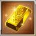緋緋金: 這遊戲最重要道具之一。主要用途是製作十天眾及終末武器突破時使用。主要獲得方式為星之古戰場的勳章兌換和四象活動兌換。
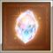金剛晶: 這遊戲最重要道具之一。主要用途是SSR召喚石突破及轉世召製作道具。目前最推薦突破的召喚石是巴布與比列召。主要獲得方式為星之古戰場的勳章兌換與轉世點數兌換(目前可以兌換6次)。
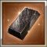大馬士革鋼: 這遊戲重要道具之一。又稱黑鋼，主要用途是SSR武器突破時使用。主要獲得方式為骸晶兌換、金月兌換及少量的其他兌換(外加官方少量的贈送)。使用時一定要先徵求老手的建議，基本上前期應該是不會用到。
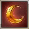金(銀、銅)月: 為抽到重複的人物解放”武器時的補償，SSR為金，SR為銀，R為銅。銅月與銀月主要消費是換取體力道具(半水)，而金月最主要兌換的是花20金月可換的黑鋼。當然有實力的人也可考慮150金月換的黑票(可選擇任意武器、召喚石兌換用)，基本上不建議換。
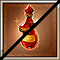大(半)水: 為遊戲回復體力的主要手段，獲得方式主要為活動，與每日賭場換取，平時注意積累即可。大水一般不拿來回復體力，主要用途為關卡內的復活。一般很難獲取。
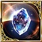玉髓: 主要用途只有一個，為十賢者的製作的必備道具，由於賢者製作是漫長的一個過程，新人騎空士也用不上，了解有這個東西就好。
各屬性現況簡評
火屬性
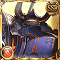方陣: 武器盤容易成型的屬性，角色需求較重，至少要有神將羊才會對這屬性有感。
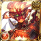
主神: 需要大量的黑鋼資源堆起來的武器盤，並且需要大量的牛刀，以目前來說系統稍微沒有什麼變化，並不推薦新人堆火主神盤。
水屬性
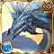方陣: 自從暴擊計算方式改變之後水方陣已經是十分充分的屬性了。配合六龍槍及泳裝卡蘿，傷害並不會輸給主神太多。
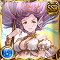主神: 現階段主神中最容易轉的屬性，基本上只需要兩把限定武器就能轉，和其他屬性相比相對便宜的。
土屬性
方陣: 由於土屬性有第十一把武器(土賢者凱伊姆)，土方陣還是挺強的，缺點大概就是沒什麼較為出眾的地方。
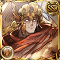
主神: 由於凱伊姆的原因，主神盤中的武器只能放置同名一把，所以也是相對容易成形的主神。不過自從2022/6/18實裝的土龍杖讓此屬性的系統起了大變化。雖然是兩種完全不同的系統(土龍杖必須武器盤中放置三把同名武器)，但是原本的賢者盤還是強無敵，也是我最推薦轉主神的第一屬性。
風屬性
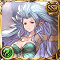方陣: 可以說是方陣中最強的屬性了，主要是和主神的差距和其他屬性相比所得出的感想，且較容易成形。
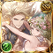
主神: 也是挺貴的盤子XD，要轉上去比方陣強大致上需要4把限定武，風主神最有感的地方就是耐久面是風方陣無法比擬的，不過以傷害來說風方陣已經十分充分了。
光屬性
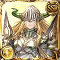方陣: 萬年光劍盤，一日光劍人終身光劍人。以前光方劍掉落率十分感人，並且商店只能兌換十把，不過後來官方每周年都送，其實現在也不是什麼特別難搞的東西了。從以前到現在光方陣的盤就沒變過也可說明光方陣的強度保證，比起武器也是角色較為吃重的屬性。
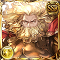主神: 非常非常貴的盤子，除了基本的法武及天司外，全部都是6%限武，不是對此屬性非常有愛的話，光方陣的強度也已經十分充分了。
暗屬性
方陣: 以前十分強力的方陣屬性，配合泳裝佐伊可以完美的發揮暗方的強度，不過以自動戰鬥的角度來看的話，暗方以前太弱了，不過這都是過去式了。現階段的暗屬生態是有巫妖醬和暗龍隨便玩的年代。要暗屬玩的愜意先想辦法弄這兩個角色來(無誤)。
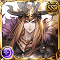主神: 考慮到角色的關係，我認為這個屬性是方陣和主神差距最小的屬性了，而且成型也相當貴，和光主神可以有得比。基本上已經是時代的眼淚了，有巫妖醬和暗龍的話完全沒有必要去轉主神。
新人時期不能做的事情
亂抽卡池！
GBF如何分配石頭在抽什麼井什麼有一定程度上的講究，根據現在的武器盤、角色情況來做合理的盤算是這遊戲的精髓之一，建議新人騎空士可以多找玩家問，當然有幾個神將是可以無腦井的(ry
亂使用珍貴的突破道具！
如前面所說的，緋緋金、金剛晶、黑鋼都是對遊戲有理解之後才使用的道具。
亂兌換金月商店的東西！
金月算是相對珍貴的東西了，畢竟算是寶晶石變換而來的，不要瞎換。
禁止武器、召喚石自己吃自己突破！
碧藍幻想的武器和召喚石大多複數是有用的千萬不要為了省突破道具吃自己突破。
對遊戲有一定程度理解前先以無課的方式來玩，除非有人可以問，否則走歪路會浪費一堆時間及資源的。
GBF其實算是對比於其他手游較為複雜的一款，主要是剛玩的騎空士會不知道該做些什麼，要做些什麼，到底這遊戲在玩什麼XDD，而且系統的設定上也較複雜一些。我也希望能藉此讓一些新玩家對GBF有初步的理解。